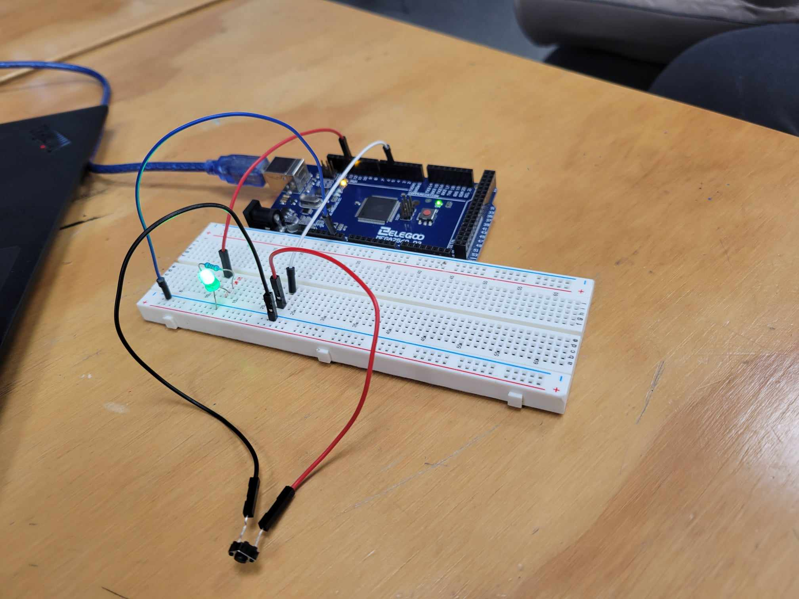

Semana 3: Diseño web Básico

En esta tercera semana, descubrimos el mundo del diseño web, explorando los fundamentos esenciales de HTML, CSS y JavaScript, los pilares sobre los cuales se construye la estructura y el estilo de una página web básica. También realizamos los primeros cambios en la plantilla de nuestra página web, especialmente en la página principal de bienvenida.
Además, dedicamos tiempo a revisar y formular las preguntas de validación de la entrevista para abordar nuestra problemática específica.
Semana 4:Personalización de la página web GITHUB

Durante esta semana, nos enfocamos en continuar personalizando nuestra página web. Nos dedicamos a incorporar datos e información personal relevante, así como a subir imágenes que beneficien la experiencia del usuario. Desde detalles sobre nuestro proyectos y trabajos anteriores, cada adición está diseñada para transmitir nuestra identidad y capacidades de manera efectiva..
Semana 5: Presentación de Trabajos
.png)
Durante esta semana, llevamos a cabo una presentación de nuestro trabajo sobre la problemática del aumento de CO2 en el parque automotriz de Lima. Expusimos nuestra investigación, análisis y posibles soluciones ante esta problemática ambiental.
Además, presentamos los avances realizados durante las últimas semanas en la personalización de nuestra página web. Mostramos los cambios implementados, incluyendo la incorporación de datos e información personal, así como la inclusión de imágenes. Estos avances representan la creación de una presencia en línea que refleje nuestra identidad y capacidades.
Semana 6: Modelado 3D ONSHAPE
.png)
En la sesión exploramos el uso del software de modelado 3D Onshape, creamos una cuenta en Onshape para acceder a las herramientas de modelado 3D. Comenzamos con el diseño de una cámara utilizando las herramientas básicas formas,extrusión. luego,Nos reunimos para discutir y definir las funciones que debe tener nuestro prototipo de filtro Ecofilter, el cual será adaptado al tubo de escape de los vehículos para reducir las emisiones de CO2.
Semana 7: PROTOTIPO

El ecofilter estará fabricado principalmente de acero quirúrgico, un material conocido por su durabilidad, resistencia y capacidad para ser reciclado, aparte de un vidrio templado el cual ayudara para verificar el proceso de como trabaja el filtro. El acero proporcionará una estructura robusta y resistente al ecofilter, asegurando su estabilidad y longevidad en diversos entornos.
Semana 8: Diagrama de Flujos

Este diagrama de flujo proporciona una guía clara y estructurada para el desarrollo del filtro ecológico Ecofilter, asegurando que cada etapa del proceso sea cuidadosamente planificada y ejecutada para lograr un producto efectivo y sostenible.El diagrama de flujo es una herramienta valiosa para visualizar, comprender y comunicar cómo funciona el proceso de manera clara y lógica del Ecofilter.
Semana 9:ARDUINO

Nos centramos en la construcción de circuitos utilizando Arduino. Realizamos dos proyectos: un LED parpadeante y un LED controlado por un pulsador. Cada proyecto incluyó la creación del circuito y la generación de los códigos de programación necesarios para su funcionamiento.
Semana 10: Presentacion GOOGLE SIDES
.png)
Presentación de nuestra página en Google Slides, donde documentamos todo el proceso de investigación y desarrollo de nuestro prototipo de filtro ecológico, denominado Ecofilter. Esta presentación incluyó la investigación realizada, los pasos del proceso de diseño y desarrollo, y la demostración de nuestro prototipo final.